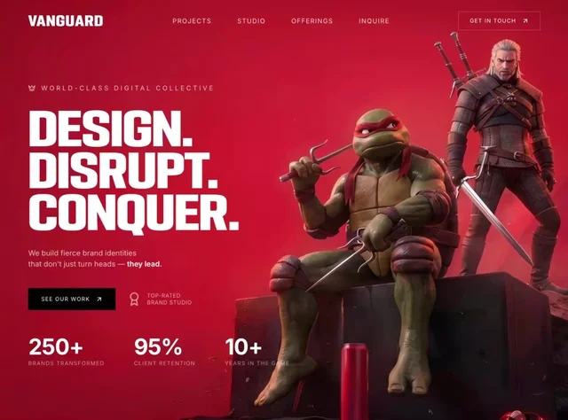
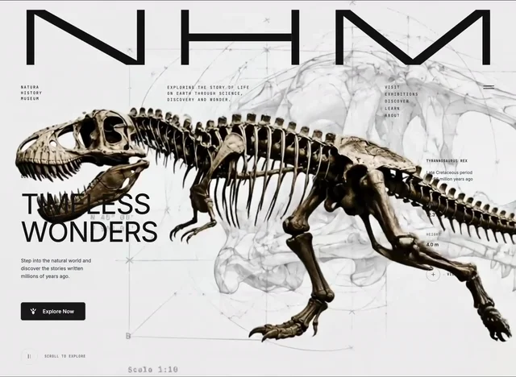
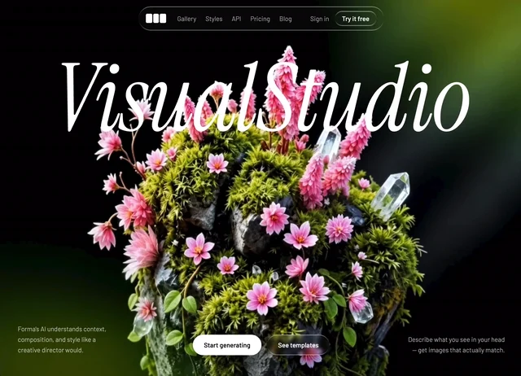
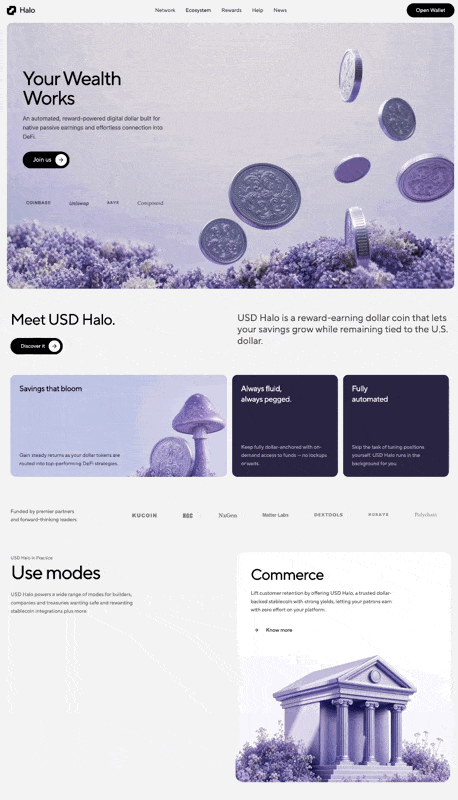

01
3D-портфолио
Бонус · промпты
Промпты для ВАУ-сайтов
Шестнадцать готовых промптов. Жмёшь Скопировать, вставляешь в нейронку - и получаешь такой же сайт. На превью видно, что соберётся.
02
Портфолио, editorial
Marcus Bennet
03
Финансы, ИИ
Boomerang
04
ИИ-сотрудники
Axon

05
Креативное агентство
VANGUARD

06
Креативная студия
Prisma

07
Полёт к звёздам
Космос

08
NFT
Orbis.Nft

09
Рассылка, контент
Mindloop

10
Дизайн-студия
Viktor Oddy

11
ИИ, флористика
Bloom
12
Медитация, фокус
Lumora


14
Генератор картинок
MicroVisuals

15
Финтех, стейблкоин
USD Halo
16
Портфолио, видеофон